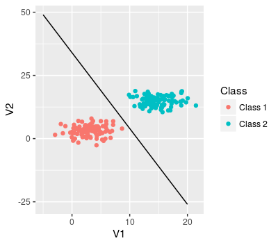

- Given the symptoms, identify the medical condtions of the patient.
- Online transaction fraud using IP address, past transaction history etc.
- Detection of DNA mutations as deleterious using data of DNA sequences with and without disease.
Linear Classifiers
Ahsan Ijaz
Ebryx
Classification Examples
Webpage categorization

Spam detection

Reading mind

Personalized healthcare

Default of Payment example
- Giving the income and balance, will the person default on payment?

Default of Payment example
- Giving the income and balance, will the person default on payment?

Linear Classification
- Separation of blue and red data points
- Feature selection task same as in regression
- Two features used in the graph below

Sentiment Analysis Example

Linear Classifier
Using training data to learn weights for each word.
| Words | Coefficients |
|---|---|
| Good | 0.5 |
| great | 1 |
| Exceptional | 1.5 |
| Awesome | 2.3 |
| bad | -1 |
| terrible | -1.5 |
| hideous | -2.5 |
| awful | -3 |
| we,are,the,where,how,restaurant | 0 |
Linear Classifier
- Input sentence
- Replace words with coefficients (x)
- Calculate Score(x) as weighted count of words in sentence
- If Score(x) > 0, declare positive sentence, else declare negative sentence
Decision Boundaries
For linear classifier:
- When 2 co-efficients are non-zero:
- A line
- When 3 co-efficients are non-zero:
- A plane
- When many co-efficients are non-zero:
- A hyperplane
Simple example of linear classifier

Simple hyperplane
- Model: \(\hat{y}_i = sign(\color{blue}{Score(x_i)})\)
- \(\color{blue}{Score(x_i)} = w_0 + w_1x_i[1] + + w_dx_i[d] = w^T\mathbf{x}\)
- feature 1 = 1
- feature 2 = #awesome
- feature 3 = #awful
- feature d = #for

Probability of each class (confidence of each prediction)
- The food was ok but the service was good. (+1 with prob 0.5)
- The food and service both were amazing. (+1 with prob 0.9)
- The food was awful, so was the service. (-1 with prob 0.9)
Generalized linear models

Logistic Regression
- sigmoid(Score) = \(\frac{1}{1+e^{(-w^T(h(x))}}\)

Multiclass Training 1 versus all
$\hat{P}(y=+1|x) = $ estimate of 1 vs all model for each class
max_prob = 0; \(\hat{y} = 0\)
For c = 1,...C:
- if \(\hat{P}_c(y=+1|x)\) > max_prob:
- \(\hat{y}\) = c
- max_prob = \(\hat{P}_c(y=+1|x)\)
- if \(\hat{P}_c(y=+1|x)\) > max_prob:
Logistic regression parameter estimation

- Maximize likelihood function over all possible w_0,w_1,W_2 values
\[ l(w_0,w_1,w_2) = \prod_{i = 0}^{n}P(y_i|x_i,\mathbf{w}) \]
- No closed form solution
- Gradient ascent algortihm to find solution
- While not converged: \[ w^{t+1} = w^t + \zeta\times{}\frac{dl}{dw}\]
Learning rate

- Try several values (exponentially spaced)
- find one \(\zeta\) that is too small
- another that is too large
- Iterate between the two values.
- Step size that decreases with iterations \(\zeta_t = \frac{\zeta_0}{t}\)